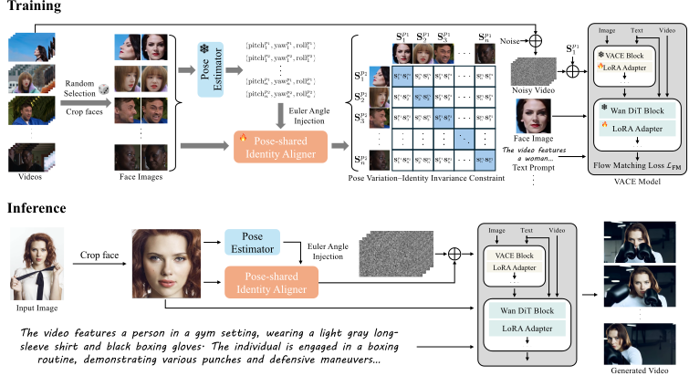
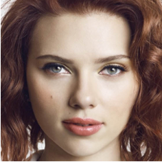
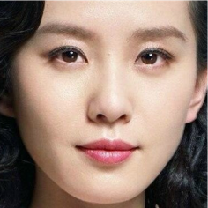

Make pose explicit
Estimate pitch, yaw, and roll, then inject their embeddings into the facial representation.
One reference. A world of motion.
Keeping identity consistent through changing poses and occlusions.
A face changes pose.
Its identity should stay the same.
Identity-preserving text-to-video models can lose facial structure and identity details when a person turns, moves, or becomes partially occluded. FaithfulFaces learns a global facial pose representation from a single reference image to make identity preservation more robust in these dynamic scenes.
A pose-shared identity aligner combines explicit Euler angle embeddings with a learned dictionary and a pose variation–identity invariance constraint. The resulting facial prior guides a video generation model toward consistent identity across poses.
Estimate pitch, yaw, and roll, then inject their embeddings into the facial representation.
Map different views into a shared dictionary space and align same-identity representations across poses.
Use the learned global facial prior with the reference image and text prompt to condition VACE-14B.

Four generated videos from a single reference image per case: boxing, turning, and dancing across different scenes.

Single-image input
Punches and defensive movements bring rapid pose changes and partial facial occlusion.
A subject turns from a back-facing pose toward the camera as a train passes.

Single-image input
A subject wearing headphones moves to music in an outdoor urban setting.
A garden dance sequence combines head turns with expressive upper-body movement.
30 identities × 20 challenging prompts. Best scores among the evaluated methods on all four reported metrics.
| Method | FaceSim-Cur ↑ | FaceSim-Arc ↑ | FID ↓ | CLIPScore ↑ |
|---|---|---|---|---|
| Vidu | 0.293 | 0.278 | 234.65 | 30.08 |
| Kling | 0.447 | 0.416 | 194.80 | 33.06 |
| ConsisID | 0.365 | 0.350 | 205.03 | 30.29 |
| VACE-14B | 0.403 | 0.382 | 191.02 | 31.83 |
| HunyuanCustom | 0.453 | 0.432 | 187.32 | 31.36 |
| Phantom-14B | 0.484 | 0.456 | 214.99 | 29.67 |
| Concat-ID-Wan | 0.408 | 0.387 | 189.55 | 31.49 |
| SkyReels-A2 | 0.410 | 0.384 | 237.29 | 28.10 |
| Stand-In | 0.415 | 0.395 | 196.21 | 30.38 |
| MAGREF | 0.417 | 0.392 | 207.69 | 31.13 |
| FaithfulFaces Ours | 0.568 | 0.542 | 164.24 | 33.93 |
↑ Higher is better. ↓ Lower is better. FaceSim evaluates facial identity similarity; FID evaluates face-region visual quality; CLIPScore evaluates text alignment. Results are specific to the evaluation setting reported in the paper.
BibTeX for the arXiv preprint.
@article{wang2026faithfulfaces,
title={FaithfulFaces: Pose-Faithful Facial Identity
Preservation for Text-to-Video Generation},
author={Wang, Yuanzhi and Ren, Xuhua and Cheng, Jiaxiang
and Ma, Bing and Yu, Kai and Liang, Sen
and Li, Wenyue and Zheng, Tianxiang
and Lu, Qinglin and Cui, Zhen},
journal={arXiv preprint arXiv:2605.04702},
year={2026}
}